#1 Treasure


 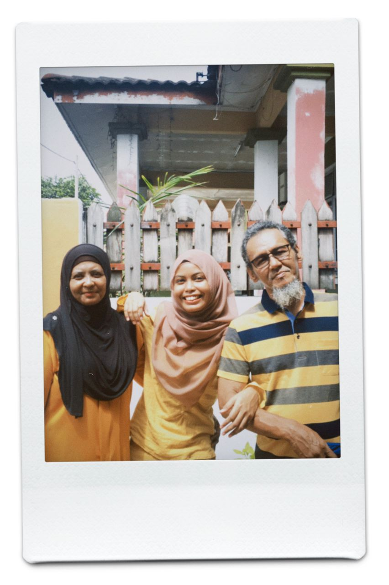
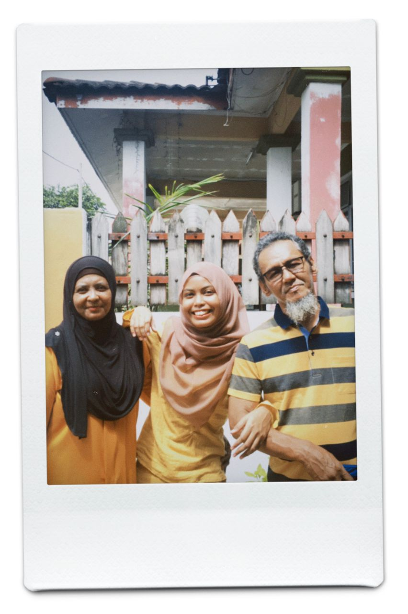


Ohana
This is my small family. Honestly, living with 9 family members
was a total fuss and mixed feelings.
Eventough we are having a rough time for years,
but now each of us are trying to be a better person
to complete each other.
I have 7 siblings with 5 brothers and 1 sister
Out of seven, I'm the fifth siblings
followed by my two younger brother. Two of my siblings
have been married which is my eldest brother already
in his 9th years of marriage and my third brother just married last year.
 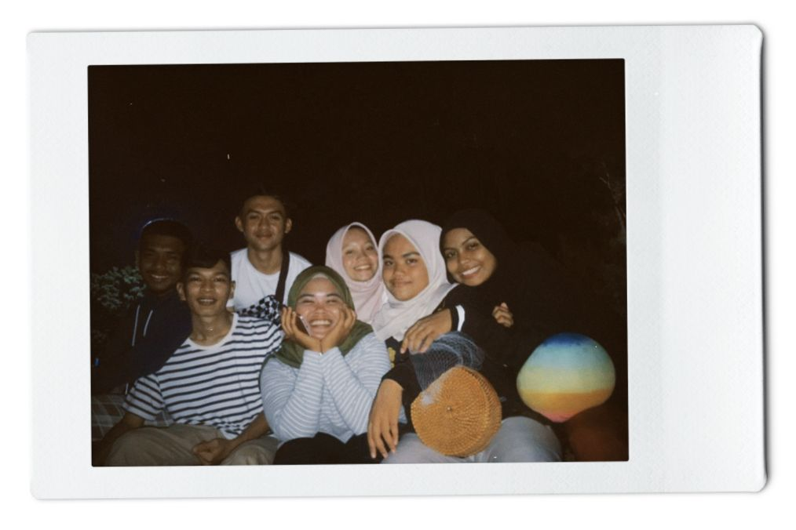
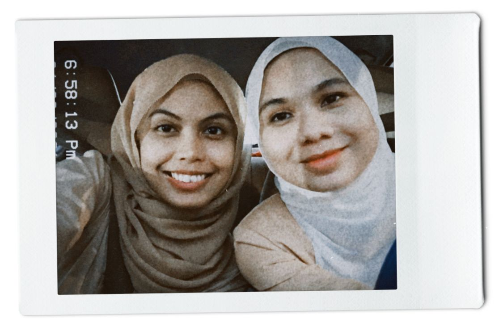
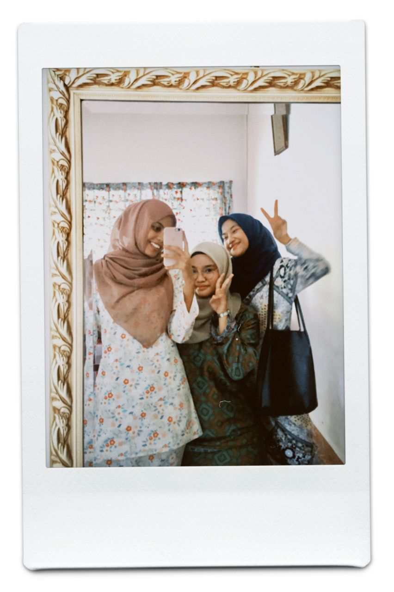
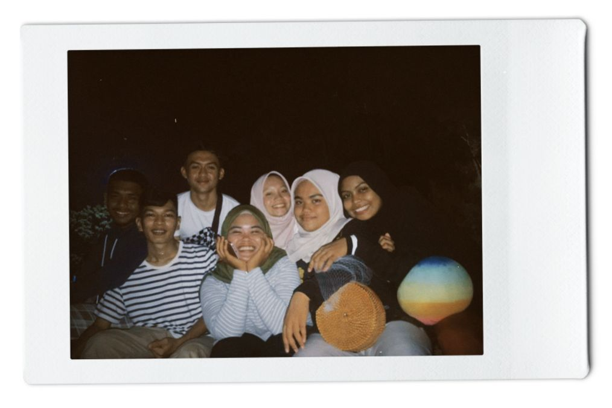
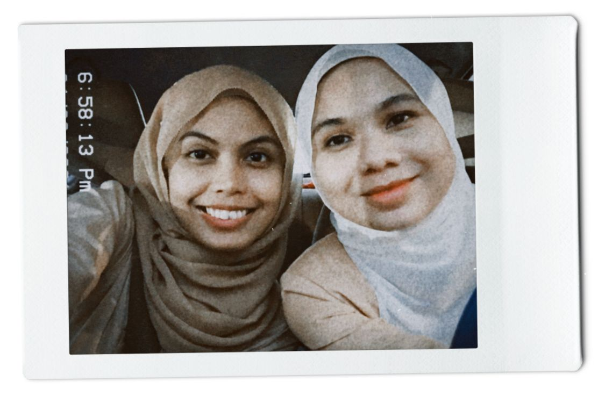
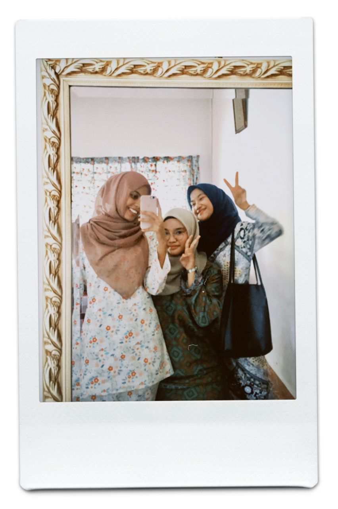
 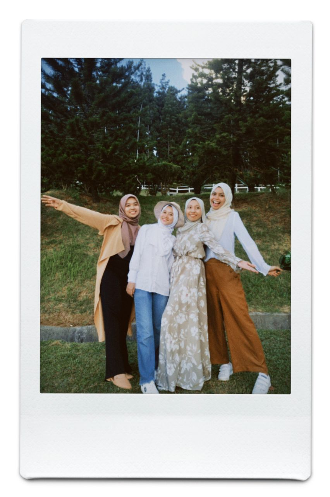
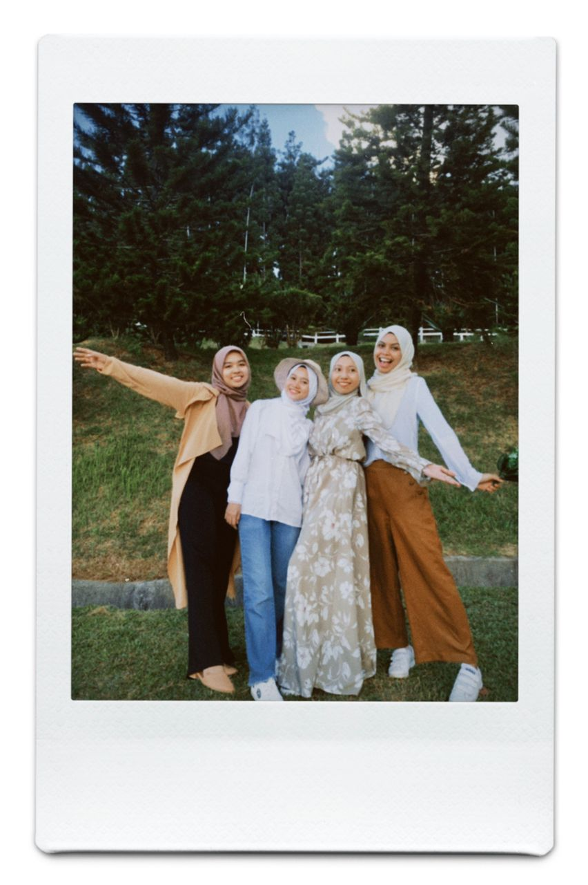

Clique
They are by far my closest friends, since primary school up until this university life. They are the one who are still having me since day one. Each of them have special place in my heart with their presence. I appreciate each of them for staying eventough I did not gave much in our friendship. Few of them have been friend with me for a decade without having any fights or arguments. There are issues, but we solved it in a really mature ways which makes me value them the most in my life. I don't like complicate things in any relation with my life. This is my way of keeping my circle healthy, it is not only beneficial to me mentally but also emotionally.

 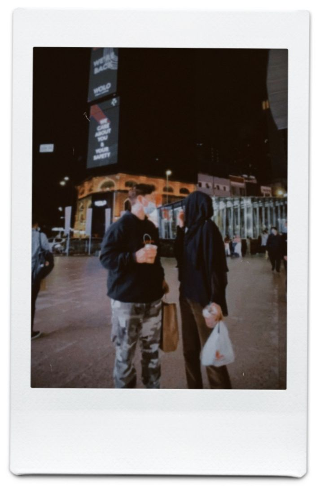
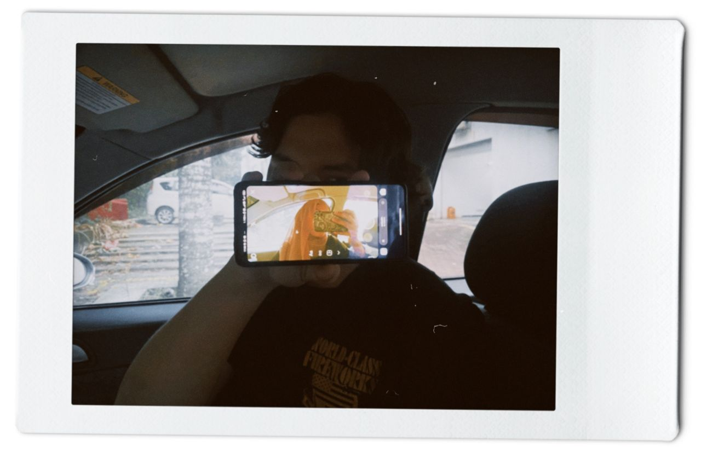
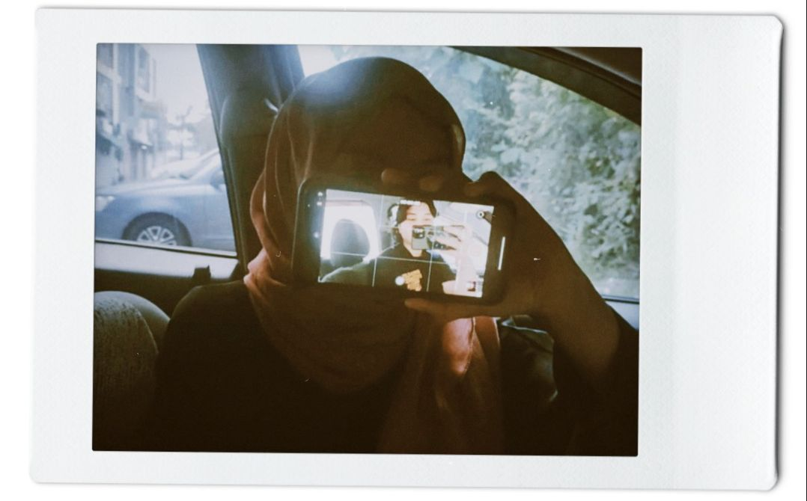
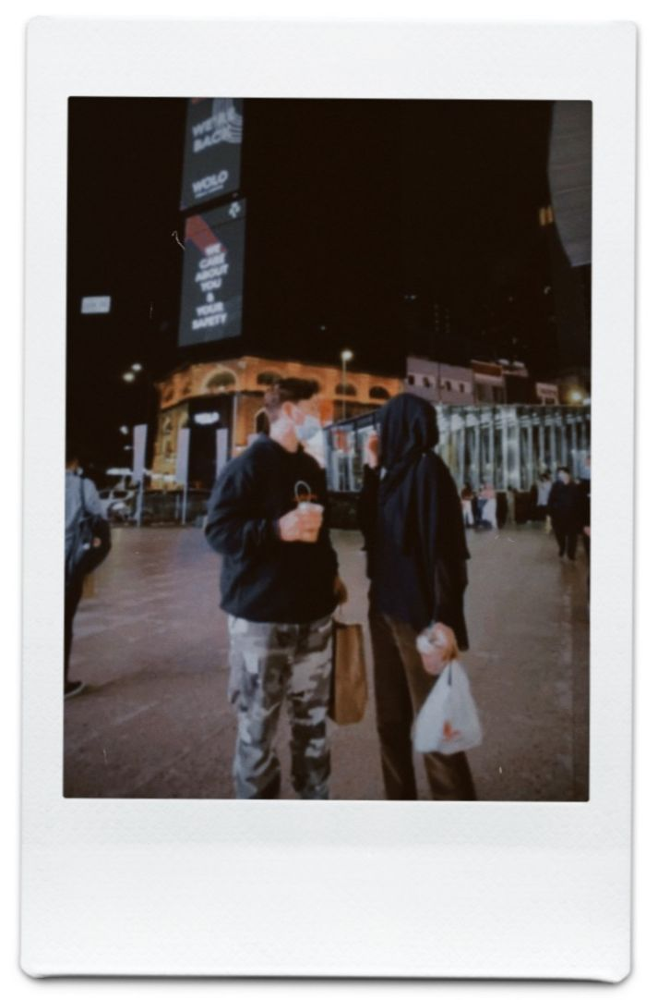
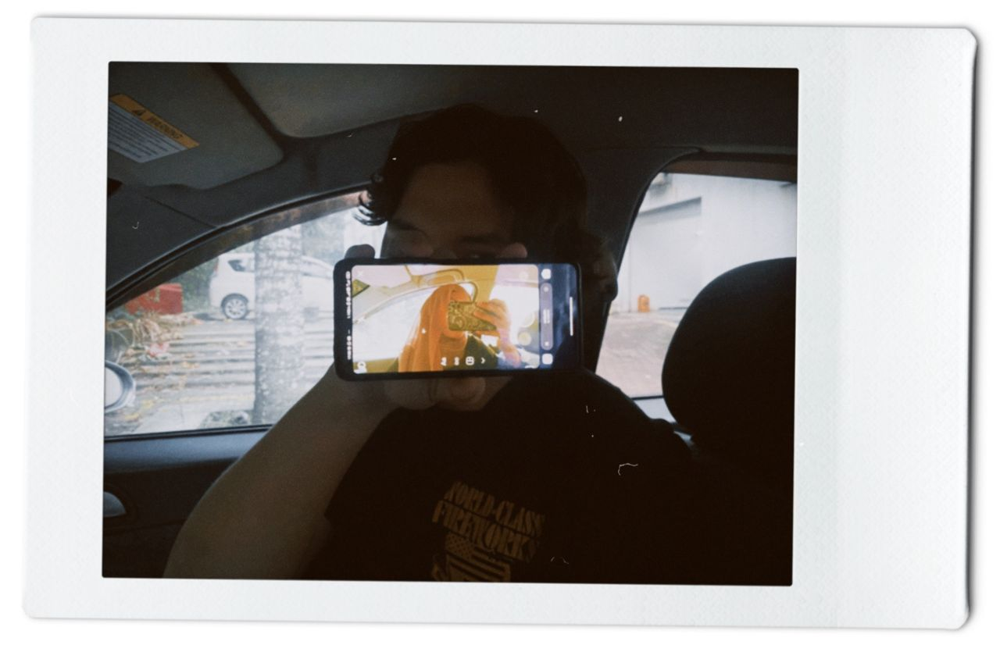
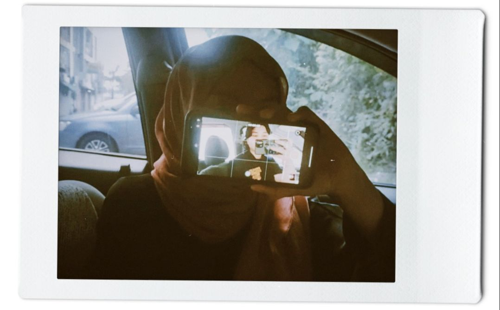


♥️
He is the guy I met early last year, started my 2021 with him. He is my first love, the actual person that got me learn about everything and explore evetything with. He came unexpectedly and running through my mind everyday. I was in misery and struggling the moment i decided to approached him. The stress over the burden has faded away after he appeared, he brings comfort and i felt the warmth of his presence that no one could give to me. He is my second home, my safest place.